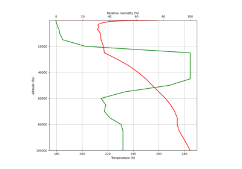

Siphon Examples¶

NCSS¶
Examples of using the netCDF Subset Service (NCSS) to download subsets of remote datasets in netCDF format.



Upper Air¶
Examples of requesting upper air (balloon) data from the Wyoming data service and from the Integrated Global Radiosonde Archive.